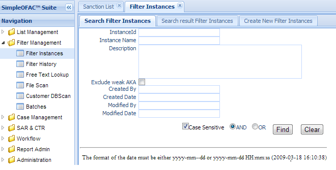
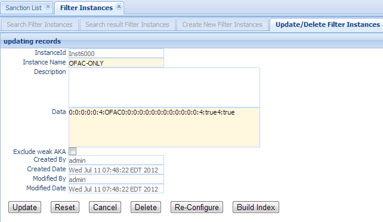
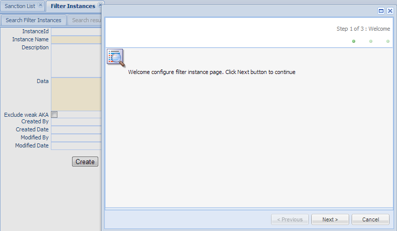
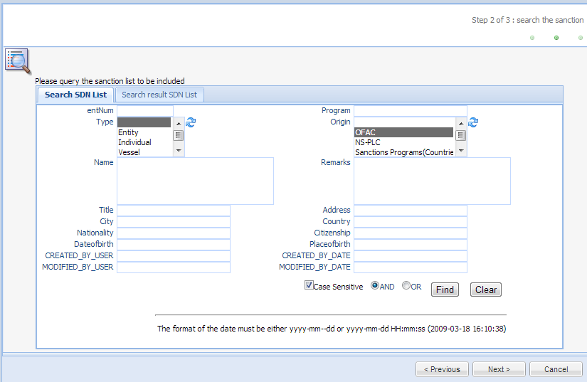
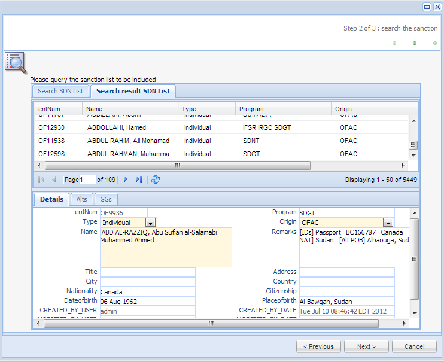
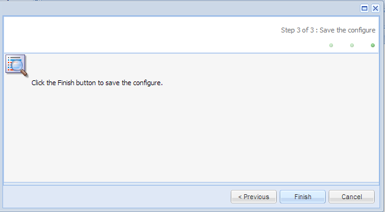
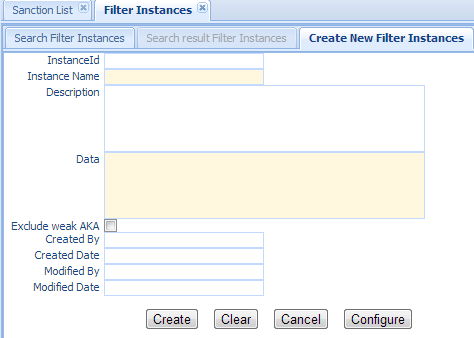

Screening Instance, also called Screening engine is a service that scans text/message(s) against the Screening Instance which gives alert or no alert result. Screening Instance manages those Screening instances/engines. Currently we only support one physical index and one Screening engine at a time which also means that at any time, there is only one Screening engine running, using the index that was last built (see Build-Index below). The last built index will override the previous one.
Clicking the Screening Instance in the left navigation menu under Screening management will make a new Screening Instance Tab folder be created in the right panel. There are 3 sub-Tab folders: Search Screening Instance, Search Result Screening Instance and Create New Screening Instance.
Search Criteria
| Field Name | Description |
|---|---|
| InstanceId | This is the unique number for the Screening Instance entry in the system . |
| Instance Name | Name of the Screening Instance. |
| AND | Select AND radio box if you want those criteria add together. |
| OR | Select OR radio box if you want to get the result if either criteria meet |
The top part is the table which shows the list of the screening instances that meet the search criteria. The bottom part is the details of the selected entry.
Double Click the selected record in the table to modify this entry. A new Tab folder Update/Delete Screening Instance will be added, as shown below.
Update: – make changes on the screening instance, and save and switch back to the “Search result Screening Instance” Tab. Some of the fields in this form are read only, like Instance Id, created/modified user and date. The configuration Data field is also read only, so it can be modified via using the Re-Configure button.
Reset:– reset the data to its initial value and discard all the changes.
Cancel:– Cancel this change and switch back to the “Search Result Screening Instance” Tab.
Delete:– Delete this entry. Then switch back to the “Search Result Screening Instance” Tab.
Re-Configure – Click this button to open a configure wizard to set up the configuration data, as shown below:
Click the Next Button to go to wizard step 2
This is a Sanction List search Search Sanction List panel, allowing the user to select the sanction list entries to be included in this screening instance. It is pre-populated with the data in the Configuration Data field.
Set search criteria; then clicking the Find Button will get a list of sanction list entries that meet the search criteria. Those sanction list entries will be indexed and used by this screening instance to scan customer data and/or payment transaction.
Click the Next button to go to wizard step 3: Save the configuration
Build Index – Click this button to build search index using the sanction list set in the previous step.
Note
Search index must be re-built in order to affect the configuration data changes. This is a very important step. Screening Instance uses search index to scan against customer data or transaction messages.
Select the “Create New Screening Instance” Tab to create a new entry.
| Field Name | Description |
|---|---|
| InstanceId | This is the unique number for the screening Instance entry in the system. |
| Instance Name | Name of the filter screening. This is a mandatory field. |
| Description | Description of this entry. |
| Data | Configuration data to define what sanction list entries should be included in the search index. User has to set the data value via Configure button. |
| CreatedByDate | Date and Time when this Screening Instance entry is created. It is a read only field. |
| CreatedByUser | User who create this Screening Instance entry. It is a read only field. |
| ModifiedByDate | Last modified date and time; It is a read only field. |
| ModifiedByUser | Last modified user; It is a read only field. |